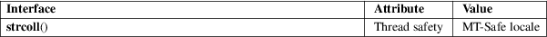

strcoll − compare two strings using the current locale
Standard C library (libc, −lc)
#include <string.h>
int strcoll(const char *s1, const char *s2);
The strcoll() function compares the two strings s1 and s2. It returns an integer less than, equal to, or greater than zero if s1 is found, respectively, to be less than, to match, or be greater than s2. The comparison is based on strings interpreted as appropriate for the program’s current locale for category LC_COLLATE. (See setlocale(3).)
The strcoll() function returns an integer less than, equal to, or greater than zero if s1 is found, respectively, to be less than, to match, or be greater than s2, when both are interpreted as appropriate for the current locale.
For an explanation of the terms used in this section, see attributes(7).

C11, POSIX.1-2008.
POSIX.1-2001, C89, SVr4, 4.3BSD.
In the POSIX or C locales strcoll() is equivalent to strcmp(3).
memcmp(3), setlocale(3), strcasecmp(3), strcmp(3), string(3), strxfrm(3)